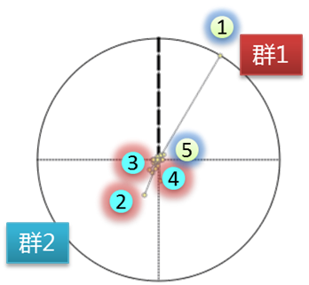
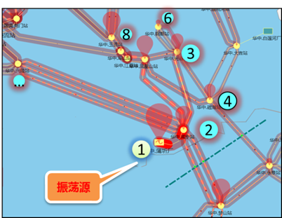
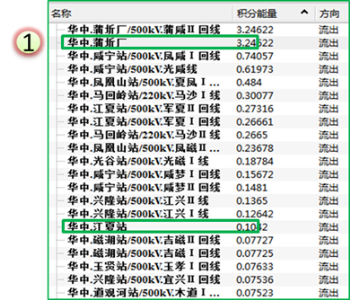
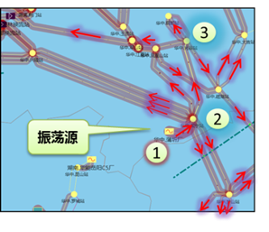
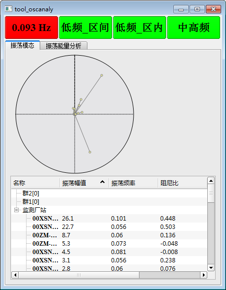
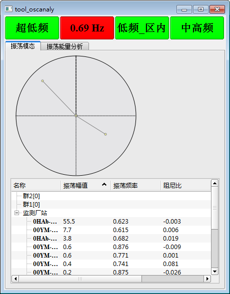
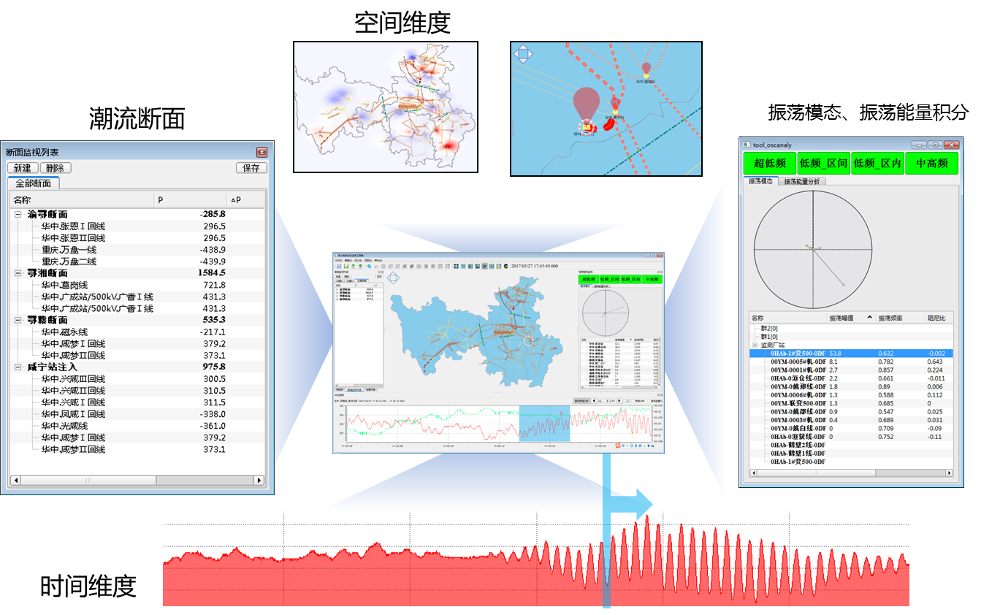
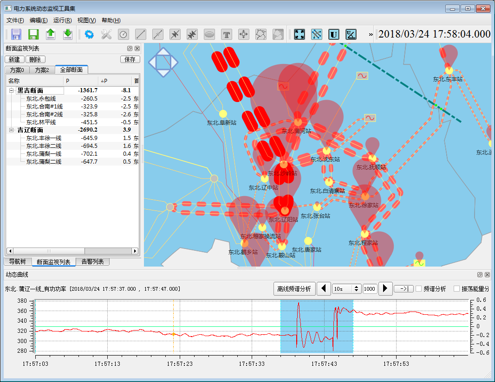

宽频振荡监测主站系统(WAMS 2.0)
2019年3月19日
概述
电力系统实时动态监测系统（WAMS）适用于广域电网、区域电网运行机构对电网运行动态过程的监视与分析。经过近20年的发展，中国已经建成世界规模最大的WAMS系统，已有接近5000个厂站安装了PMU装置，在支撑广域电网安全稳定运行方面发挥了巨大作用。
为适应风电场与光伏电站大规模并网、电能大范围输送、可再生能源占比越来越高的中国电网发展趋势，支撑电网调控中心应对特高压交直流混联电网的复杂特性，四方公司总结近20年的产品开发、技术研究与产品运维的经验，推出电网宽频振荡监测系统（WAMS 2.0）。
系统架构
电力系统宽频振荡监测系统由位于发电厂、变电站、新能源厂站的新型同步相量测量装置和位于多级调控中心的监测系统主站构成。
图1电力系统宽频振荡监测系统架构图
主要功能
1)振荡模式在线提取
计算功率波动最强机组、线路的主导振荡模式，提取相邻区域厂站注入功率的振荡模式，按照相位进行在线分群，结合电网拓扑关系辅助确定扰动源。
（2-1）节点振荡模态筛选

（2-2）基于振荡模态在线分群

（2-3）辅助振荡源定位
2)基于暂态能量法的强迫振荡源定位
根据主导振荡模式频率，提取机组出力、厂站注入功率、线路功率的主导振荡曲线，进行暂态能量积分，通过对节点注入暂态能量的积分曲线，结合网络拓扑关系，确定振荡源。

（3-1）振荡能量流出

（3-2）振荡能量流入

（3-3）振荡能量积分曲线

（3-4）振荡源定位
3)宽频振荡在线监测
对振荡最直观的展示效果是对输电线路进行振荡功率的渲染，在对监视频段内可能出现的超低频振荡、低频振荡（区间）、低频振荡（局部）、中高频振荡和次超同步振荡事件，通过振荡类型按钮进行目标振荡模态的切换，在地理接线图上进行振荡功率传输路径的渲染。

（4-1）超低频振荡模态

（4-2）区间低频振荡模态
4)时序相关的多维展示
基于时间驱动与拓扑关系的一体化监视与振荡可视化工具以地理接线图、关键数据曲线、实时告警窗为主要元素，结合应用分析结果组合：断面潮流、全网相角差、实时振荡模态、振荡源定位、电压稳定裕度指标等，构成可视化主题画面。其中曲线（以频率为主）用于表现被观测电网的关键厂站在时域的变化趋势，地理接线图上则通过等高线渲染、箭头、着色线段等方式，表现被观测电网在当前时刻运行态势在空间的分布情况。

图5 基于时间驱动的一体化监视与振荡可视化工具

图6 故障潮流转移监视模式
系统特点与优势
与WAMS系统现状相比，具有如下关键特征与优势。
- 仿真系统与虚拟现实设备实现了无缝联接
- 基于VR/AR技术的变电站仿真技术
- 真实的场景，趣味性和互动性强
- 电力系统一二次设备的巡视及操作
- 具有导航功能，能够快速跳转定位
- 实现故障设置及处理流程培训
- 设备铭牌查看及操作指导
- 故障诊断及远程专家指导
工程应用
★创新铸就四方，梦想点亮未来★
★Innovation Lights Our Future★
四方股份为您提供优质的解决方案
如有任何问题，请与我们联系
邮箱：guodongxia@sf-auto.com
电话：18515513881/010-82181832